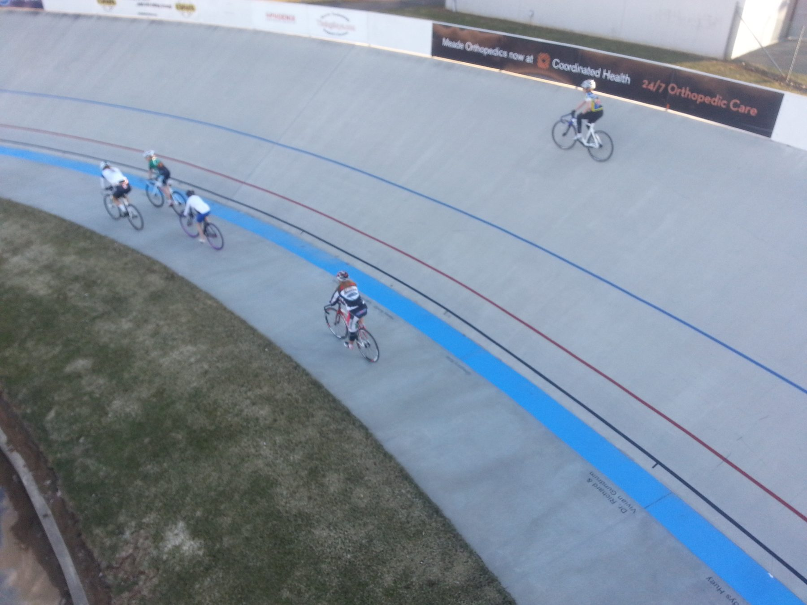

Трек
Гонки на velodrome: фиксированная передача, без тормозов, чистая скорость и тактика на коротких дистанциях.
Что это за дисциплина
Трековый велоспорт проходит на овальном велодроме с наклонным полотном — райдеры используют байки без тормозов и с фиксированной передачей, где нельзя перестать крутить педали. Дисциплина требует взрывной мощности и идеальной техники входа в вираж.
Форматы разные: от чистого спринта один на один до групповых гонок на выбывание и командного преследования, где решает синхронность всей четвёрки.
С чего начать
- Первые тренировки проходят под контролем тренера — трек прощает ошибки хуже шоссе
- Освойте педалирование по кругу без остановки — это базовый навык фикс-гира
- Начните с низкой линии полотна, постепенно поднимаясь к виражам
- Развивайте взрывную силу через короткие спринтерские интервалы
Тренировочный подход
Программа строится вокруг силовых и спринтерских блоков в зале и на треке, с акцентом на технику входа в вираж и стартовое ускорение. Аэробная база нужна меньше, чем на шоссе — на первый план выходит мощность.
Другие дисциплины
Попробуйте себя в другом формате.
Готовы выйти на старт?
Оставьте почту — пришлём вводный тренировочный план по треку и расписание открытых заездов.